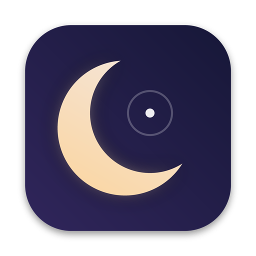

macOS · Lunar autoguiding
Keep the Moon exactly where you framed it.
Even a good mount lets the Moon slowly drift out of frame. MoonGuide watches the Moon itself through a ZWO guide camera and nudges your mount back with small ST-4 corrections, so long lunar videos, mosaics and time-lapses stay put.
- Guides on the lunar disk itself, so you don't need a guide star
- Works at night, at twilight and in a bright daytime sky
- Auto exposure and gain tuned for the Moon
- Focus indicator for the lunar limb
- Every correction has a hard time limit, and a watchdog releases the mount's guide lines if anything stalls
- Try it without hardware in simulation mode

What you need
Three pieces of gear and two cables. MoonGuide talks to the camera over USB, and the camera passes the guide corrections on to the mount through its ST-4 port.
A ZWO camera with an ST-4 port
Any ZWO ASI camera with an ST-4 guide port, monochrome or color, on a guide scope or your telescope. Tested with the ASI220MM Mini.
An equatorial or Alt-Az mount with an ST-4 port
Aligned and already tracking the Moon. MoonGuide doesn't move the mount on its own; it only adds small corrections. Tested with a Rainbow Astro RST-135E in Alt-Az mode.
A Mac with macOS 15 or later
A MacBook or any other Mac with Apple Silicon (M1 or newer), running macOS 15 Sequoia or later. Intel Macs aren't supported.
Apple Silicon
guide commands out
mono or color
guide pulses
with ST-4 port
- Frame the whole Moon. The default settings expect a Moon about 280–400 px across, for example a 4 µm-pixel camera on a guide scope of about 150 mm focal length. For other setups, change the Moon size in Settings.
- No drivers to install. The ZWO camera library is built into the app.
- In daylight, a red or infrared-pass filter is strongly recommended. It makes the Moon stand out much more against a blue sky.
- Not tested yet: equatorial mounts and color cameras on real hardware. If you try them, we'd love to hear how it goes at support@yjlab.io.
How it works
Your mount keeps tracking the Moon as usual. MoonGuide doesn't replace that tracking. It measures where the Moon actually is and corrects the leftover drift.
Find the Moon
Connect the camera and start the preview. MoonGuide fits a circle to the lit edge of the Moon, so it also works on partial phases, down to about a 10 % crescent in testing.
Calibrate
One click moves the mount a little in each direction. MoonGuide learns how each ST-4 direction moves the image, including camera rotation.
Set a target and guide
Click where the Moon should stay and press Start Guiding. A live graph shows the remaining tracking error.
Built for the Moon
Day, twilight and night
Removes sky brightness gradients and measures Moon/sky contrast. It skips frames that are too faint or uneven to trust.
Moon-based Auto exposure
Keeps the bright lunar surface near 80 % of full scale instead of averaging the whole frame, which would blow out the Moon at night.
Familiar camera controls
Exposure and gain work like ZWO's ASICap: pick a range, type a number or drag a slider. Changes apply right away.
Limb focus indicator
Shows how sharp the lunar limb is. Turn the focuser until it reads "at best". Exposure and sky brightness don't change the reading.
Bad-frame protection
Ignores sudden jumps, clouds and stale frames. If the Moon is lost for too long, guiding stops on its own.
Session logs and replay
Every pulse and state change is logged. You can record frames and replay a session later to see what happened.
Safety
Never point your optics at or near the Sun.
Sunlight through a telescope or guide scope can destroy a camera and cause permanent eye damage. MoonGuide only sends small guide corrections and never slews the mount, but it cannot know where the Sun is. In a bright sky it asks you to confirm this before calibration or guiding starts.
Bounded pulses
Every correction has a hard maximum length. Only one guide line is active at a time, and a watchdog releases all lines if a pulse is not ended in time.
Stays out of the way
Updates and other app activity never interrupt calibration or guiding. Stop Guiding (⌘.) always runs immediately.
Stay with your mount
If the Mac crashes or USB fails completely during a pulse, a guide line may stay active. MoonGuide releases every line the next time it connects.
How to install
Download & drag
Open the DMG and drag MoonGuide onto the Applications folder. No other software is needed, not even camera drivers.
Try the simulation
Without a camera connected, choose Connect ▸ Simulated ASI220MM Mini to try every step on a simulated Moon.
Stay up to date
MoonGuide checks for new versions from MoonGuide ▸ Check for Updates… Updates are signed and installed only after you approve them.
Privacy. MoonGuide works offline. Settings, session logs and recorded frames stay on your Mac. The only network request is the update check. Third-party software. MoonGuide includes the ZWO ASI Camera SDK and libusb (LGPL-2.1); their licenses are in the app bundle. Questions or problems? Write to support@yjlab.io.